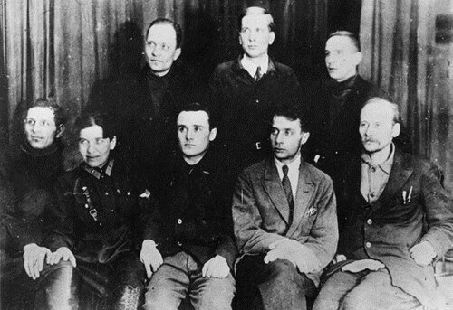

В 1930-е годы идеи космических полётов впервые начали воплощаться в металле. Именно тогда в Советском Союзе появились первые организации, где теория Циолковского превращалась в инженерные расчёты и экспериментальные ракеты. Главную роль в этом сыграли ГИРД и РНИИ — два центра, заложивших фундамент практической космонавтики.

Всё началось с Группы изучения реактивного движения (ГИРД), созданной в Москве в 1931 году. Её вдохновителем стал Фридрих Цандер, горевший идеей межпланетных полётов. Работали энтузиасты практически бесплатно, по ночам и в выходные, из-за чего аббревиатуру ГИРД в шутку расшифровывали как «Группа инженеров, работающих даром». Однако их труд принёс впечатляющие плоды. Уже в 1933 году на полигоне в Нахабино была запущена первая советская ракета на гибридном топливе — ГИРД-09, созданная под руководством Михаила Тихонравова. Чуть позже, в ноябре того же года, состоялся пуск первой жидкостной ракеты ГИРД-Х.
Понимая перспективность направления, советское военное руководство во главе с маршалом Михаилом Тухачевским инициировало создание единого государственного центра. Так 21 сентября 1933 года появился Реактивный научно-исследовательский институт (РНИИ), объединивший московский ГИРД и ленинградскую Газодинамическую лабораторию (ГДЛ). Именно здесь в 1930-е годы работали люди, которым суждено было стать отцами-основателями практической космонавтики:
- Сергей Королёв — начинал как начальник ГИРД, затем стал заместителем начальника РНИИ. Несмотря на разногласия по техническим вопросам и последующий арест, именно его воля и талант главного конструктора в будущем приведут СССР к космическим триумфам.
- Валентин Глушко — разрабатывал в ГДЛ и РНИИ первые советские жидкостные ракетные двигатели (серии ОРМ), заложив основу отечественного двигателестроения.
- Михаил Тихонравов — руководитель бригады в ГИРД, создатель ракеты ГИРД-09. Его инженерный гений впоследствии сыграет ключевую роль в создании первых спутников и корабля «Восток».
Институт не ограничивался теорией. В его стенах разрабатывались реактивные снаряды, ставшие основой для легендарной «Катюши», первый советский ракетоплан РП-318, крылатые и баллистические ракеты. История РНИИ не была безоблачной: конец 1930-х годов омрачился арестами и трагической гибелью многих талантливых инженеров, включая первого директора Ивана Клеймёнова и его заместителя Георгия Лангемака. Тем не менее, заложенный в эти годы фундамент позволил после войны совершить качественный рывок и создать ракетно-космическую промышленность, которая вывела человечество в космос.